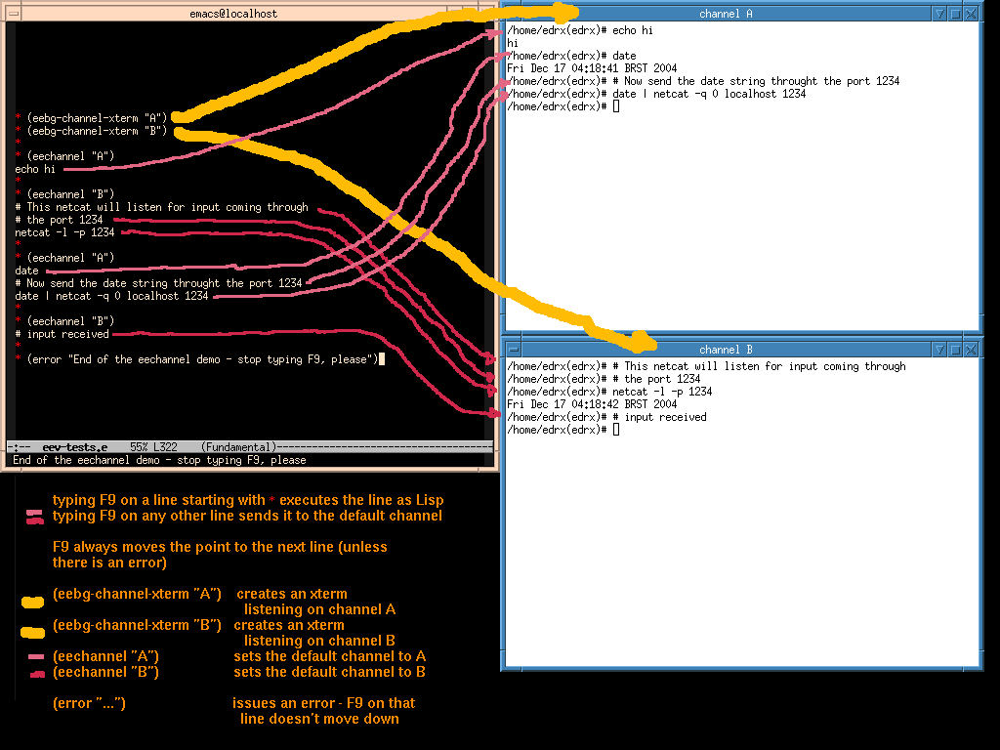
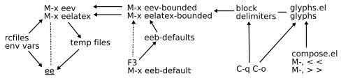
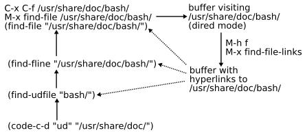
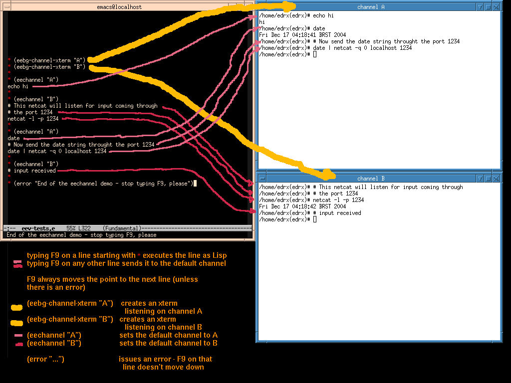
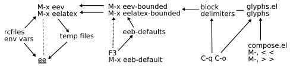
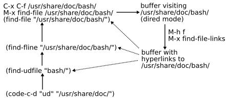

This is the `README' file of GNU eev.
Copyright (C) 2004, 2005 Free Software Foundation, Inc.
Copying and distribution of this file, with or without modification,
are permitted in any medium without royalty provided the copyright
notice and this notice are preserved.
Author and version: Eduardo Ochs, 2005aug06.
How to get in touch: IRC is the fastest way. I'm "edrx" at
irc.freenode.net, try to /query or /whois me if I'm not at #emacs
or at #debian-rj or #debian-br or #eev. If you prefer e-mail, I'm
<edrx@mat.puc-rio.br>.
+------------------------------------------------------------------+
| Note: the body of this README hasn't been changed since |
| 2005jan06! So: this README is not a very good introduction to |
| eev anymore! Please start by the article (eev.pdf, or its |
| asciified version, eev.txt.html, links below) and by the |
| ".anim.html" links - they're animations in Flash that show some |
| features of eev in action. |
+------------------------------------------------------------------+
<http://angg.twu.net/eev-current/article/eev.pdf>
<http://angg.twu.net/eev-current/article/eev.txt.html>
<http://angg.twu.net/eev-current/anim/channels.anim.html>
<http://angg.twu.net/eev-current/anim/gdb.anim.html>
<http://angg.twu.net/>
New things in this file: added links to the mailing list and to the
ChangeLog file, and removed the mentions to eev-0.95.0 - 0.95.0 is
quite old now, and -current is almost becoming 0.95.1.
Latest version: <http://angg.twu.net/eev-current/README>
htmlized: <http://angg.twu.net/eev-current/README.html>
See also: <http://angg.twu.net/eev-current/INSTALL.html>
<http://angg.twu.net/eev-current/ChangeLog.html>
<http://angg.twu.net/eev-current/EMACS.html>
<http://angg.twu.net/eev-current/NEWS.html>
<http://angg.twu.net/eev-current/>
(find-eev "INSTALL")
(find-eev "EMACS")
(find-eev "NEWS")
(find-eev "")
Mailing list: <http://lists.nongnu.org/mailman/listinfo/eev>
archives: <http://lists.gnu.org/archive/html/eev/>
1. What Is Eev
==============
Eev is a package that adds suport for e-scripts in Emacs.
But what are e-scripts?...
1.1. A Short Description of What E-scripts are (The Sales Talk)
---------------------------------------------------------------
E-scripts are files containing notes about how to do certain computer
tasks. Some parts of an e-script are written in English or in other
human languages, and are not intended to be interpreted by the
computer in any way; other parts contain logs of the interactions with
the programs that were involved in the task, in a form that allows not
only inspection and textual modification but also controlled
"re-execution" - that is, repeating that interaction in another
moment, with or without modification, from the steps registered in the
log, without the need to repeat each keystroke or mouse-click by hand.
So: e-scripts are a way of taking "executable notes" of what you
do. If you interact with the system using Emacs and Eev then notes in
e-script form will get produced more or less automatically, and
redoing things that you've already done before becomes trivial.
1.2. A More Honest Description, or: Between Code and Actions, E-scripts
-----------------------------------------------------------------------
A typical e-script is a plain text file containg bits of text and
chunks of code intended to be interpreted by several different
programs. There's no way to execute a whole e-script file at once;
instead, the user interactively selects parts of the e-script while he
or she is editing it in Emacs - these parts can be the current line,
or Emacs's "region", or everything before and after the cursor until
certain delimiters strings are found, etc -, and then asks Emacs to
either execute those parts as Lisp code, or to save them into a
temporary script file (to run those parts in a shell or a shell-like
program later), or to send them immediately as input to some external
program, or to process them in another way.
An "action" can be "recorded" as text by writing down code that
produces that action when executed - remember that code is text! The
transformation
"action": effect
code -> of executing
the code
is natural for the computer; the opposite direction,
code that
action -> produces
that action
is not. For many actions we may know how to do that by hand, and for
some kinds of actions there are tools to automatically generate the
corresponding code; we will discuss some of these tools later (section
"Following and Creating Elisp Hyperlinks", below).
1.3. Two Basic Examples: Shell Commands and Hyperlinks
------------------------------------------------------
If our "action" is to enter these commands in a shell,
cd /home/backups/
tar -tvzf persephone-2002jun10.tar.gz > ~/.files
grep books.db ~/.files
then we can record that by just pasting the commands to Emacs (by the
way, in this case it is the way of playing back the commands that is
not obvious! See the screenshot below for the trick). But now suppose
that we have just found a piece of interesting information in the
documentation (in Info) for Zsh, in the node called "Process
Substitution", around the first occurrence of the string "=(...)" in
the text - how do we create a "hyperlink" to that, that is, one whose
action when "followed" will be to take us to that page and to put the
cursor at that point? The elisp expression below does the job:
(find-node "(zsh)Process Substitution" "=(...)")
We can execute it by placing the cursor after it and typing C-x C-e,
or by placing the cursor anywhere in the line and typing M-e. Note:
C-x C-e is standard in Emacs, while (this behaviour for) M-e is
defined in eev; `find-node' is from eev, but Emacs comes with several
functions that make sense as hyperlinks, for example:
(find-file "/etc/fstab")
(info "(zsh)Process Substitution")
(info "(emacs)Lisp Eval")
(man "ls")
(describe-key "\C-x\C-e")
(describe-function 'eval-last-sexp)
(where-is 'eval-last-sexp)
These "hyperlink" functions that are native to Emacs do not accept the
extra arguments specifying where to move the cursor to, but all the
functions in eev do (these extra arguments are called "pos-spec-list"s
in eev, by the way).
Note that these "elisp hyperlinks" can appear inside comments in code
for other languages:
# (find-node "(zsh)Process Substitution" "=(...)")
function catcat () { echo "Temp file: $1"; cat $1; tac $1 }
catcat =(echo foo; echo bar; echo plic)
This is a valid block of shell commands - code for one language can
appear inside code for another language.
It would be very hard to make a system supporting several languages
this if the limits of each block had to be found automatically, and
the language identified; but in eev the boundaries of the block and
the language are selected interactively, and thanks to that the
implementation is very simple - and that makes adding support for
additional languages in eev quite easy [include a list of currently
supported languages, and write a (big) section about Interacting with
Unsupported Things].
The commented screenshot below illustrates one way of sending commands
to a shell - by putting the cursor inside a "delimited region" and
typing <f3>, then going to shell and running `ee' there.
 It is also possible to do something similar with regions that are not
bounded by delimiters; just mark the region in the usual way in Emacs,
by setting the "mark" and moving the "point", then type M-x eev.
One variation: if you mark a region and issue M-x eelatex instead of
M-x eev then the region will be "sent to LaTeX" instead of to the
shell; the region will be written in a temporary .tex file, and the
temporary script will receive commands to run latex on the temporary
.tex file and display the resulting .dvi file; after M-x eelatex you
switch to a shell and run `ee' there.
(find-enode "Mark")
By the way, the name `eev' stands for something like
"Emacs-execute-(in a shell)-verbosely". It was one of the first Emacs
Lisp functions that I wrote, and as I was executing it several
hundreds of times a day it had to have a very short name that would be
very easy to type.
2. Actions That Are Executed Step-by-Step
=========================================
2.1. Single-Stepping Through Series of Emacs Actions: `eesteps'
--------------------------------------------------------------
Try this: execute:
(eesteps '("C-x b * scratch * RET"
"foobar"
"3*<left>"
(insert "!")))
then type <f12> four times, slowly. Emacs will:
1) switch to the buffer "*scratch*"
2) insert "foobar"
3) move the point left three characters
4) insert "!".
Typing another <f12> will give an error ("No more steps").
Here's how this works, internally: the variable `eesteps-list' holds a
list of "steps" to execute, and the variable `eesteps-pos' holds a
pointer (a number) saying where we are in that list; the function
`eesteps' receives a list of steps, stores that in `eesteps-list' and
resets `eesteps-pos' to 0.
The steps in `eesteps-list' can be either lists -- and in this case
executing the step means evaluating the list -- or strings; strings
are interpreted as sequences of keys, written in the verbose format
used by `edmacro-mode'.
(find-eev "eev-dev.el" "eesteps")
(find-eev "eev-dev.el" "eek")
(find-eev "eev-dev.el" "eek0")
(find-efile "")
(find-efile "edmacro.el")
The function `eek' is a kind of "hyperlink to executing a key
sequence"; it is used by `eesteps-do-step'. `eek0' is similar but
uses Emacs's native format for keyboard macros, which is usually
more compact and harder to read.
[Problem: eek and eek0 run their strings as macros, but macros runs
in a kind of non-verbose mode - M-w doesn't give visual feedback]
2.2. Sending one line at a time to an external program: `eechannel'
-------------------------------------------------------------------
This is a new feature that is très chic: controlling several programs
at the same time. Click on the screenshot to enlarge.

(find-eev "eegchannel")
News: we can use the same trick - save the "line" in a file, then send
a SIGUSR1 to the process responsible for the channel - with strings
that are not necessarily lines and with controlling processes that are
no eegchannel; see:
(find-eevex "python.e" "eechannel-python")
(find-eevex "tcltk.e" "eechannel-tcl")
3. Splitting Eev in Two Halves (and Their Frontier)
===================================================
Eev is mainly composed of two parts: one that deals with creating and
following elisp hyperlinks, and another one that is concerned with
selecting a part of a text and sending it to an external program
(usually a shell).
In reality the frontier between the two parts is quite blurry - there
are too many hybrids, and there's no way to get rid of them. That will
be discussed in section 3.3.
[This section is much more technical than the others. The idea is
that people who read this section would be able to understand modify
and extend the code...]
3.1. One half of eev: sending commands to a shell and other related things
--------------------------------------------------------------------------

The diagram above shows what is involved in writing some lines of
code for an external program (most typically a shell) in Emacs and
then making the program execute those lines. I've made a commented
screenshot about that:
(find-eevfile "doc/shot-f3.png")
The "technically simpler" way - that is, the one involving less
functions - to send commands to a shell is to write the commands as
text in a buffer, then mark the region containing these commands,
then type `M-x eev'; that will save the region in a certain
temporary file. The name of that file is given by a certain
environment variable - $EE, usually set to ~/eev-current/tmp/ee.sh -
and that value of variable is set in rcfiles - check your .bashrc,
.zshrc and .emacs after installation. Then to execute these commands
we go to a shell and type `ee'; `ee' is a shell function (also
defined in .bashrc/.zshrc) that "sources" the contents of $EE.
It is usually more practical to write the commands inside a "region"
bounded by delimiters (see the "shot-f3.png" screenshot above), then
just place the cursor inside that region and type <f3>. By default
<f3> will execute `eev-bounded', that will run `eev' in that bounded
region; but there are several ways to change this default. The
variable `eeb-defaults' contains the "default bounded function", the
delimiters to use, and other things; if you another "bounded
function" explicitly, say, with `M-x eelatex-bounded', that will set
the defaults - the next time you time <f3> it will run
`eelatex-bounded' using block delimiters that make more sense for
LaTeX - "\n%*\n" instead of "\n#*\n". So actually <f3> runs
`eeb-default'.
[Actually the diagram is a bit misleading... eev-bounded calls
eeb-default[s], or something like that. Explain and show how the old
implementation was]
(find-eev "eev-dev.el")
3.2. Funny Characters
-----------------------
To type the red stars in these delimiters, use C-q C-o. This inserts
a "literal C-o" in the text, whose ascii code is 15; it would
normally be displayed as "^O", but we change that to a red star
using "glyphs" (see the file glyphs.el). glyphs.el defines several
other non-standard glyphs, like "«" and "»". We can enter those
typing M-, < < and M-, > >, respectively. The function associated to
`M-,', `compose-two-keys', is defined in compose.el. Neither glyphs
nor these "compose pairs" would be strictly needed for eev, but I
find them convenient.
(find-eev "glyphs.el")
(find-eev "compose.el")
3.3. The other half: following and creating Elisp hyperlinks
------------------------------------------------------------

Emacs's support for executing Lisp expressions
(a.k.a. "S-expressions", or "sexps") embedded in any kind of text
lets us put some simple types of hyperlinks anywhere; for example,
typing `C-x C-f /usr/share/doc/bash' or `M-x find-file
/usr/share/doc/bash' has the same effect as placing the cursor after
the text (find-file "/usr/share/doc/bash") and executing that with
C-x C-e or with M-e; the effect is to create a buffer visiting
/usr/share/doc/bash/ - that, incidentally, is a directory, so the
buffer will be in "dired mode".
Eev defines the function `find-fline', that is a bit more adequate
than `find-file' for hyperlinks. For example,
(find-fline "/usr/share/doc/bash/" "FAQ")
will do the same but will also place the cursor after the first
occurence of the string "FAQ" in the buffer. Most hyperlinks
functions in eev support this kind of finer control; the optional
arguments after the file name are called the "pos-spec-list".
If we need to create links to several files inside a certain
directory we can use `code-c-d': for example, (code-c-d "ud"
"/usr/share/doc/") will define a function `find-udfile' and several
others with names like `find-ud___' `ee-ud___'.
Until some time ago we had to write almost all these hyperlinks by
hand - there were a function called `inn', that would insert a
hyperlink to the last Info node visited, and `dff' and `dfa', that
would convert lines containing names of Debian packages into
hyperlinks to their descriptions, to their lists of files and to
their documentation directory, but just that. Then in November of
2004 I got an idea for a group of functions that would take either a
file being visited, or a name of an Emacs Lisp function, or a key
sequence, or several other things, and would create a temporary
buffer containing several interesting hyperlinks about that thing.
For example: typing `M-h f' on a buffer visiting
/usr/share/doc/bash/examples/ gives us a buffer like this:
___________________________________________________________
|(find-file-links "/usr/share/doc/bash/examples/") |
| |
|(find-fline "/usr/share/doc/bash/examples/") |
| |
|(find-bashfile "examples/") |
|(find-udfile "bash/examples/") |
| |
| |
| |
|--:** *Elisp hyperlinks* All L9 (Fundamental)------|
|___________________________________________________________|
In this case there aren't any surprising hyperlinks (but try `M-h
M-k <del>', `M-h M-v ctl-x-map' or `M-h M-d bash'!) but it is clear
that we can not only follow each of these hyperlinks but also edit
them and copy them to more permanent places.
There are a few special keys for working on these hyperlinks. `M-h
M-2' or `M-h 2' will duplicate the current line, `M-h M-y' - the
name is to remind us of `C-y' - will paste the last element of the
kill ring as a pos-spec; for example, if the last string we killed
(say, with `C-w') was "scripts" then `M-h M-2 M-h M-y' will
transform:
(find-udfile "bash/examples/")
into:
(find-udfile "bash/examples/")
(find-udfile "bash/examples/" "scripts")
There are currently no special keys to help us build `code-c-d'
expressions - but check this:
(find-efile "hippie-exp.el")
(global-set-key [f11] 'hippie-expand)
then try to type part of a file name and use <f11> to complete it.
See (find-eev "eev-insert.el")
3.4. Emacs's tools for transforming actions into code
-----------------------------------------------------
[To be written. Mention debugging, C-h k, interactive calls, keymaps,
modes.]
3.5. The frontier: hybrid functions
-----------------------------------
[To be written.]
#*
# (eev-bounded)
wget --help
#*
# (eev "wget --help")
# (find-sh "wget --help")
#*
inkscape $EEVDIR/doc/diag-save.svg
#*
# (eev "inkscape $EEVDIR/doc/diag-save.svg &")
eev or find-sh0 links inside lisp comments
eev or find-sh links inside shell comments
hybrid links will exist every time that we are learning a new program
and still don't know how to make links to it using more common-looking
links.
3.4. More on hyperlinks (plus garbage)
--------------------------------------
[Fix this, give examples]
[and so we don't need to quote portions of external texts inside an
e-script; instead, we can point directly to the original sources. Eev
defines many kinds of "hyperlinks" like these: for text files, for
info manuals, for manpages, for ps/pdf/dvi/html files, for the output
of shell commands, for Emacs's own source code in Lisp or in C, for
Debian packages, for images, and a few others.]
The two hyperlinks below are equivalent:
(find-man "1 expect" "\nCOMMANDS" "\n interact [string1 body1] ...")
(find-expcommand "interact [string1 body1] ...")
The first one opens the manpage for the program Expect (like "man 1
expect"), then searches for the first ocurrence of a newline followed
by the string "COMMANDS" -- that's the beginning of the section of the
manpage that describes expect's commands --, then searches for the
first place after that where the string "interact [string1 body1] ..."
(preceded by a newline and exactly 8 spaces) occurs; that's the point
of the manpage where is the description of the command "interact".
the underlying idea (or "belief"?) is that we should be able to
"record" all kinds of textual interactions with the machine in
e-scripts, in a way that will let us "play back" these interactions
later - maybe with modifications - and maybe even share them with
other people.
Also: readability. Recording the way to open up an info page as a
series of keys is not very useful... (give an example). Idem for
mouseclicks. Show how commands in Gimp have textual names:
# (find-sh "cd ~/.gimp-2.0/; sort menurc")
E-scripts may be a more powerful way to communicate
actions and procedures than either finished programs or texts and
how-tos, which usually describe most of the steps using human
languages.
[For a detailed introduction to Emacs, Lisp expresions and evaluation
see:]
<http://angg.twu.net/eev-current/EMACS.html>
(find-eev "EMACS")
The main stuff: (find-eev "eev-dev.el")
eev-mode keys: (find-eev "eev-dev.el" "eev-mode-map")
Support for other programs: (find-eev "eev-langs.el")
Glyphs ("*", "«", "»", etc):
Typing them: (find-eev "compose.el")
Displaying them: (find-eev "glyphs.el")
Trying it
=========
See <http://angg.twu.net/eev-current/INSTALL.html> for installation
instructions.
Sorry, I haven't yet organized the examples in a logical way that can
be used as a tutorial...
The file "eev-tests.e" used to contain tests for almost all the
functions of eev-del.el, but it is outdated, sorry.
emacs ~/eev-current/examples/eev-tests.e
More later, as always. Some interesting links:
<http://angg.twu.net/e/>
<http://angg.twu.net/eev-current/examples/>
<http://angg.twu.net/eev-current/examples/eev-tests.e.html>
(find-elinode "List Processing")
<http://www.fsf.org/software/emacs/emacs-lisp-intro/html_node/List-Processing.html>
<http://www.gnu.org/software/emacs/emacs-paper.html#SEC9>
<http://www.gnu.org/software/emacs/emacs-paper.html#SEC29>
;; (find-angg ".emacs" "emacs-ascii-screenshots")
;; (setq my-screenshot-prefix " ")
;; Local Variables:
;; mode: text
;; coding: raw-text-unix
;; ee-anchor-format: "«%s»"
;; ee-comment-prefix: ";;"
;; sentence-end-double-space: t
;; End:
It is also possible to do something similar with regions that are not
bounded by delimiters; just mark the region in the usual way in Emacs,
by setting the "mark" and moving the "point", then type M-x eev.
One variation: if you mark a region and issue M-x eelatex instead of
M-x eev then the region will be "sent to LaTeX" instead of to the
shell; the region will be written in a temporary .tex file, and the
temporary script will receive commands to run latex on the temporary
.tex file and display the resulting .dvi file; after M-x eelatex you
switch to a shell and run `ee' there.
(find-enode "Mark")
By the way, the name `eev' stands for something like
"Emacs-execute-(in a shell)-verbosely". It was one of the first Emacs
Lisp functions that I wrote, and as I was executing it several
hundreds of times a day it had to have a very short name that would be
very easy to type.
2. Actions That Are Executed Step-by-Step
=========================================
2.1. Single-Stepping Through Series of Emacs Actions: `eesteps'
--------------------------------------------------------------
Try this: execute:
(eesteps '("C-x b * scratch * RET"
"foobar"
"3*<left>"
(insert "!")))
then type <f12> four times, slowly. Emacs will:
1) switch to the buffer "*scratch*"
2) insert "foobar"
3) move the point left three characters
4) insert "!".
Typing another <f12> will give an error ("No more steps").
Here's how this works, internally: the variable `eesteps-list' holds a
list of "steps" to execute, and the variable `eesteps-pos' holds a
pointer (a number) saying where we are in that list; the function
`eesteps' receives a list of steps, stores that in `eesteps-list' and
resets `eesteps-pos' to 0.
The steps in `eesteps-list' can be either lists -- and in this case
executing the step means evaluating the list -- or strings; strings
are interpreted as sequences of keys, written in the verbose format
used by `edmacro-mode'.
(find-eev "eev-dev.el" "eesteps")
(find-eev "eev-dev.el" "eek")
(find-eev "eev-dev.el" "eek0")
(find-efile "")
(find-efile "edmacro.el")
The function `eek' is a kind of "hyperlink to executing a key
sequence"; it is used by `eesteps-do-step'. `eek0' is similar but
uses Emacs's native format for keyboard macros, which is usually
more compact and harder to read.
[Problem: eek and eek0 run their strings as macros, but macros runs
in a kind of non-verbose mode - M-w doesn't give visual feedback]
2.2. Sending one line at a time to an external program: `eechannel'
-------------------------------------------------------------------
This is a new feature that is très chic: controlling several programs
at the same time. Click on the screenshot to enlarge.

(find-eev "eegchannel")
News: we can use the same trick - save the "line" in a file, then send
a SIGUSR1 to the process responsible for the channel - with strings
that are not necessarily lines and with controlling processes that are
no eegchannel; see:
(find-eevex "python.e" "eechannel-python")
(find-eevex "tcltk.e" "eechannel-tcl")
3. Splitting Eev in Two Halves (and Their Frontier)
===================================================
Eev is mainly composed of two parts: one that deals with creating and
following elisp hyperlinks, and another one that is concerned with
selecting a part of a text and sending it to an external program
(usually a shell).
In reality the frontier between the two parts is quite blurry - there
are too many hybrids, and there's no way to get rid of them. That will
be discussed in section 3.3.
[This section is much more technical than the others. The idea is
that people who read this section would be able to understand modify
and extend the code...]
3.1. One half of eev: sending commands to a shell and other related things
--------------------------------------------------------------------------

The diagram above shows what is involved in writing some lines of
code for an external program (most typically a shell) in Emacs and
then making the program execute those lines. I've made a commented
screenshot about that:
(find-eevfile "doc/shot-f3.png")
The "technically simpler" way - that is, the one involving less
functions - to send commands to a shell is to write the commands as
text in a buffer, then mark the region containing these commands,
then type `M-x eev'; that will save the region in a certain
temporary file. The name of that file is given by a certain
environment variable - $EE, usually set to ~/eev-current/tmp/ee.sh -
and that value of variable is set in rcfiles - check your .bashrc,
.zshrc and .emacs after installation. Then to execute these commands
we go to a shell and type `ee'; `ee' is a shell function (also
defined in .bashrc/.zshrc) that "sources" the contents of $EE.
It is usually more practical to write the commands inside a "region"
bounded by delimiters (see the "shot-f3.png" screenshot above), then
just place the cursor inside that region and type <f3>. By default
<f3> will execute `eev-bounded', that will run `eev' in that bounded
region; but there are several ways to change this default. The
variable `eeb-defaults' contains the "default bounded function", the
delimiters to use, and other things; if you another "bounded
function" explicitly, say, with `M-x eelatex-bounded', that will set
the defaults - the next time you time <f3> it will run
`eelatex-bounded' using block delimiters that make more sense for
LaTeX - "\n%*\n" instead of "\n#*\n". So actually <f3> runs
`eeb-default'.
[Actually the diagram is a bit misleading... eev-bounded calls
eeb-default[s], or something like that. Explain and show how the old
implementation was]
(find-eev "eev-dev.el")
3.2. Funny Characters
-----------------------
To type the red stars in these delimiters, use C-q C-o. This inserts
a "literal C-o" in the text, whose ascii code is 15; it would
normally be displayed as "^O", but we change that to a red star
using "glyphs" (see the file glyphs.el). glyphs.el defines several
other non-standard glyphs, like "«" and "»". We can enter those
typing M-, < < and M-, > >, respectively. The function associated to
`M-,', `compose-two-keys', is defined in compose.el. Neither glyphs
nor these "compose pairs" would be strictly needed for eev, but I
find them convenient.
(find-eev "glyphs.el")
(find-eev "compose.el")
3.3. The other half: following and creating Elisp hyperlinks
------------------------------------------------------------

Emacs's support for executing Lisp expressions
(a.k.a. "S-expressions", or "sexps") embedded in any kind of text
lets us put some simple types of hyperlinks anywhere; for example,
typing `C-x C-f /usr/share/doc/bash' or `M-x find-file
/usr/share/doc/bash' has the same effect as placing the cursor after
the text (find-file "/usr/share/doc/bash") and executing that with
C-x C-e or with M-e; the effect is to create a buffer visiting
/usr/share/doc/bash/ - that, incidentally, is a directory, so the
buffer will be in "dired mode".
Eev defines the function `find-fline', that is a bit more adequate
than `find-file' for hyperlinks. For example,
(find-fline "/usr/share/doc/bash/" "FAQ")
will do the same but will also place the cursor after the first
occurence of the string "FAQ" in the buffer. Most hyperlinks
functions in eev support this kind of finer control; the optional
arguments after the file name are called the "pos-spec-list".
If we need to create links to several files inside a certain
directory we can use `code-c-d': for example, (code-c-d "ud"
"/usr/share/doc/") will define a function `find-udfile' and several
others with names like `find-ud___' `ee-ud___'.
Until some time ago we had to write almost all these hyperlinks by
hand - there were a function called `inn', that would insert a
hyperlink to the last Info node visited, and `dff' and `dfa', that
would convert lines containing names of Debian packages into
hyperlinks to their descriptions, to their lists of files and to
their documentation directory, but just that. Then in November of
2004 I got an idea for a group of functions that would take either a
file being visited, or a name of an Emacs Lisp function, or a key
sequence, or several other things, and would create a temporary
buffer containing several interesting hyperlinks about that thing.
For example: typing `M-h f' on a buffer visiting
/usr/share/doc/bash/examples/ gives us a buffer like this:
___________________________________________________________
|(find-file-links "/usr/share/doc/bash/examples/") |
| |
|(find-fline "/usr/share/doc/bash/examples/") |
| |
|(find-bashfile "examples/") |
|(find-udfile "bash/examples/") |
| |
| |
| |
|--:** *Elisp hyperlinks* All L9 (Fundamental)------|
|___________________________________________________________|
In this case there aren't any surprising hyperlinks (but try `M-h
M-k <del>', `M-h M-v ctl-x-map' or `M-h M-d bash'!) but it is clear
that we can not only follow each of these hyperlinks but also edit
them and copy them to more permanent places.
There are a few special keys for working on these hyperlinks. `M-h
M-2' or `M-h 2' will duplicate the current line, `M-h M-y' - the
name is to remind us of `C-y' - will paste the last element of the
kill ring as a pos-spec; for example, if the last string we killed
(say, with `C-w') was "scripts" then `M-h M-2 M-h M-y' will
transform:
(find-udfile "bash/examples/")
into:
(find-udfile "bash/examples/")
(find-udfile "bash/examples/" "scripts")
There are currently no special keys to help us build `code-c-d'
expressions - but check this:
(find-efile "hippie-exp.el")
(global-set-key [f11] 'hippie-expand)
then try to type part of a file name and use <f11> to complete it.
See (find-eev "eev-insert.el")
3.4. Emacs's tools for transforming actions into code
-----------------------------------------------------
[To be written. Mention debugging, C-h k, interactive calls, keymaps,
modes.]
3.5. The frontier: hybrid functions
-----------------------------------
[To be written.]
#*
# (eev-bounded)
wget --help
#*
# (eev "wget --help")
# (find-sh "wget --help")
#*
inkscape $EEVDIR/doc/diag-save.svg
#*
# (eev "inkscape $EEVDIR/doc/diag-save.svg &")
eev or find-sh0 links inside lisp comments
eev or find-sh links inside shell comments
hybrid links will exist every time that we are learning a new program
and still don't know how to make links to it using more common-looking
links.
3.4. More on hyperlinks (plus garbage)
--------------------------------------
[Fix this, give examples]
[and so we don't need to quote portions of external texts inside an
e-script; instead, we can point directly to the original sources. Eev
defines many kinds of "hyperlinks" like these: for text files, for
info manuals, for manpages, for ps/pdf/dvi/html files, for the output
of shell commands, for Emacs's own source code in Lisp or in C, for
Debian packages, for images, and a few others.]
The two hyperlinks below are equivalent:
(find-man "1 expect" "\nCOMMANDS" "\n interact [string1 body1] ...")
(find-expcommand "interact [string1 body1] ...")
The first one opens the manpage for the program Expect (like "man 1
expect"), then searches for the first ocurrence of a newline followed
by the string "COMMANDS" -- that's the beginning of the section of the
manpage that describes expect's commands --, then searches for the
first place after that where the string "interact [string1 body1] ..."
(preceded by a newline and exactly 8 spaces) occurs; that's the point
of the manpage where is the description of the command "interact".
the underlying idea (or "belief"?) is that we should be able to
"record" all kinds of textual interactions with the machine in
e-scripts, in a way that will let us "play back" these interactions
later - maybe with modifications - and maybe even share them with
other people.
Also: readability. Recording the way to open up an info page as a
series of keys is not very useful... (give an example). Idem for
mouseclicks. Show how commands in Gimp have textual names:
# (find-sh "cd ~/.gimp-2.0/; sort menurc")
E-scripts may be a more powerful way to communicate
actions and procedures than either finished programs or texts and
how-tos, which usually describe most of the steps using human
languages.
[For a detailed introduction to Emacs, Lisp expresions and evaluation
see:]
<http://angg.twu.net/eev-current/EMACS.html>
(find-eev "EMACS")
The main stuff: (find-eev "eev-dev.el")
eev-mode keys: (find-eev "eev-dev.el" "eev-mode-map")
Support for other programs: (find-eev "eev-langs.el")
Glyphs ("*", "«", "»", etc):
Typing them: (find-eev "compose.el")
Displaying them: (find-eev "glyphs.el")
Trying it
=========
See <http://angg.twu.net/eev-current/INSTALL.html> for installation
instructions.
Sorry, I haven't yet organized the examples in a logical way that can
be used as a tutorial...
The file "eev-tests.e" used to contain tests for almost all the
functions of eev-del.el, but it is outdated, sorry.
emacs ~/eev-current/examples/eev-tests.e
More later, as always. Some interesting links:
<http://angg.twu.net/e/>
<http://angg.twu.net/eev-current/examples/>
<http://angg.twu.net/eev-current/examples/eev-tests.e.html>
(find-elinode "List Processing")
<http://www.fsf.org/software/emacs/emacs-lisp-intro/html_node/List-Processing.html>
<http://www.gnu.org/software/emacs/emacs-paper.html#SEC9>
<http://www.gnu.org/software/emacs/emacs-paper.html#SEC29>
;; (find-angg ".emacs" "emacs-ascii-screenshots")
;; (setq my-screenshot-prefix " ")
;; Local Variables:
;; mode: text
;; coding: raw-text-unix
;; ee-anchor-format: "«%s»"
;; ee-comment-prefix: ";;"
;; sentence-end-double-space: t
;; End: